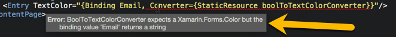

Value Converter Type Safety
Provide Xaml type-safety by annotating IValueConverter's with the ValueConversion attribute
Introduction
In Xamarin.Forms developers data bind properties in a control to properties on a binding context using the Binding markup extension.
Typically, the type on the control's property matches the type on the binding context property. But what if we had a screen with an email entry that needs to change color when the user enters a valid email?
Enter the IValueConverter interface; value converters transform one data type to another.
We can expose a boolean IsEmailValid on our binding context, bind the TextColor field of the entry to the IsEmailValid property and use an IValueConverter that converts a True value to black and a False value to red.
Our converter would look like this:
public class BoolToTextColorConverter : IValueConverter
{
public object Convert(object value, Type targetType, object parameter, CultureInfo culture)
{
return (bool)value ? Color.Black : Color.Red;
}
public object ConvertBack(object value, Type targetType, object parameter, CultureInfo culture)
{
throw new NotImplementedException();
}
}
And when used in our xaml:
LoginPage.xaml
<?xml version="1.0" encoding="UTF-8"?>
<ContentPage
xmlns="http://xamarin.com/schemas/2014/forms"
xmlns:x="http://schemas.microsoft.com/winfx/2009/xaml"
x:Class="MyApp.LoginPage"
xmlns:converters="clr-namespace:MyApp.Converters;assembly=MyApp">
<ContentPage.Resources>
<ResourceDictionary>
<converters:BoolToTextColorConverter x:Key="boolToTextColorConverter" />
</ResourceDictionary>
</ContentPage.Resources>
<Entry TextColor="{Binding IsEmailValid, Converter={StaticResource boolToTextColorConverter}}"/>
</ContentPage>
Now when the user enters an invalid email, the value converter will translate the IsEmailValid boolean property in a Xamarin.Forms.Color!
But what if we accidentally provided a string to the BoolToTextColorConverter:
<Entry TextColor="{Binding Email, Converter={StaticResource boolToTextColorConverter}}"/>
This creates a runtime bug we won't discover until we build, deploy and navigate to the LoginPage; we'll see a type cast exception without a clear indication of the problem.
We can completely avoid this problem by declaring a value converters intent with an ValueConversionAttribute to hint to MFractor's Xaml analyser it's expected behaviour.
The ValueConversion Attribute
In WPF, Microsoft provides the ValueConversionAttribute that developers can use to describe the input, output and parameter type that an IValueConverter expects. This class level annotation declares the intent of a value converter to tools and to other developers using a converter.
Unfortunately this attribute is in the PresentationFramework assembly, which we can't reference in a Xamarin.Forms PCL or shared project.
As the ValueConversionAttribute is simple in implementation, we can easily make our own:
[AttributeUsage(AttributeTargets.Class, AllowMultiple = true)]
public class ValueConversionAttribute : Attribute
{
public ValueConversionAttribute(Type input, Type output)
{
}
public Type ParameterType { get; set; }
}
Let's examine this attribute in detail:
- The constructor
ValueConversionAttribute(Type input, Type output)declares the expected input and output types for a converter. Type inputis the expected input type for the value converter. This is the argumentobject valuefor theConvertmethod and the return type for theConvertBackmethod.Type outputis the expected output type for the value converter. This is the return type for theConvertmethod and the argumentobject valuefor theConvertBackmethod.- The property
Type ParameterTypeis the expected paramter type for the value converter. This is the argumentobject parameterfor theConvertandConvertBackmethods.
To use the ValueConversionAttribute in our source code, we annotate a value converter at the class level and use the typeof operator to provide input, output and parameter types:
[ValueConversion(typeof(bool), typeof(Xamarin.Forms.Color))]
public class BoolToTextColorConverter : IValueConverter
{
public object Convert(object value, Type targetType, object parameter, CultureInfo culture)
{
return (bool)value ? Color.Black : Color.Red;
}
public object ConvertBack(object value, Type targetType, object parameter, CultureInfo culture)
{
throw new NotImplementedException();
}
}
The BoolToTextColorConverter now declares it's intent when converting values to both tooling and other developers; it must have a bool as an input and it must return into a Xamarin.Forms.Color type.
To include the ValueConversionAttribute we can simply copy-paste the code into our code base. Alternatively, add a third party library like FormsCommunityToolkit.Converters that has the ValueConversionAttribute defined.
Converter Type-Safety in Xaml
When an IValueConverter is annotated with the ValueConversion attribute, we declare to MFractor that our value converter wishes to enforce type safety.
This has a few benefits:
- MFractor can now verify the types passed into and returned by a
Converterexpression are correct in the given context. - When MFractor is generating a property from a binding expression, it can now extract the type information for a converter and generate that property with the correct type information.
Let's consider our previous example of a provided a string as the input to the BoolToTextColorConverter:
<Entry TextColor="{Binding Email, Converter={StaticResource boolToTextColorConverter}}"/>
When analysing the Binding expression, MFractor will inspect for Converter expressions and then evaluate the inner converter for it's expected input and output type.
As we have provided a string but BoolToTextColorConverter expects a bool, MFractor will mark this as an error within the Xaml editor:

Voila! We now have type-safety in our Xaml when using value converters! ✨✨
Annotated value converters also allow the refactoring engine to correctly generate properties.
For example, if the our binding context is missing the Email property, MFractor will extract the input type from the value converter and use that to generate the binding property:

Instead of using the type of the TextColor property, MFractor could see that BoolToTextColorConverter expected a bool value and then generated the Email property with a bool.
Summary
In this tutorial we learnt:
- We can annotate implementations of
IValueConverterwith aValueConversionAttributeto declare it's value conversion intent. - Annotated value converters enable MFractor's Xaml analyser to provide type-safety in the Xaml editor.
- Annotated value converters enable MFractor's refactoring engine to generate properties with the correct type information.